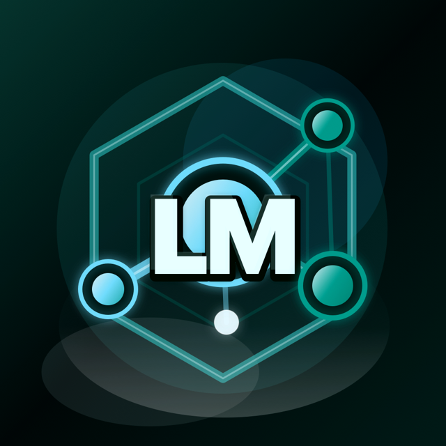
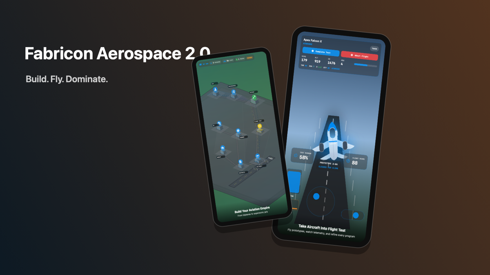

Native craft
SwiftUI experiences built for iPhone, iPad, and Mac.
Independent Apple-platform developer
I build ambitious native apps at the intersection of creativity, simulation, and artificial intelligence—designed to make complex systems feel clear and human.
SwiftUI experiences built for iPhone, iPad, and Mac.
Local, on-device, and cloud models in one thoughtful workflow.
Games and tools where deep mechanics stay approachable.
Selected projects
Flagship products, focused experiments, and the foundations behind them.

An AI command center for managing models, machines, personas, teams, chat, image generation, and repeatable workflows across local, on-device, and cloud providers.

A century-spanning aviation strategy game, developed in the AeroTycoonGame repository. Design aircraft, build a workforce, win contracts, navigate historical eras, and grow an aerospace company from 1910 into the future.
A mobile-first political dynasty prototype where players govern a cutaway civic estate, resolve crises, and carry one polity across changing regimes.
A chat-first cockpit for a personal AI fleet: local and on-device models, image engines, nodes, tools, and generated work in one native iPhone and iPad experience.
A local-first agent operating system and AI compute control plane with stable Contacts, bounded workspaces, observable delegation, and shared WebUI and TUI clients.
A fast, structured tuning companion for racing games. Capture a build, confirm every stat, generate a complete tune, and refine it after each run.
An archived native workbench for discovering, loading, comparing, and orchestrating local models, retained as a technical reference for the active AI products.
A chat-first AI studio that brings local machines, cloud models, media engines, personas, teams, and persistent projects into one focused workspace.
A local-first vocal-production studio for recording, editing, mixing, lyric work, and portable export, now available on the App Store for iPhone and iPad.
An older song-centric catalog and artist-operations workspace connecting lyrics, projects, collaborators, releases, rights, beats, and next actions.
A Clean Swift architectural rewrite of AeroTycoon with a working finance vertical slice, extensive design documents, and substantial remaining scaffolding.
The exact specification-kit precursor that was realized in Harness OS—not a second implementation.
Public product site, issue board, feedback relay source, and substantial local web companion for the private native app.
Public aerospace support surface and planned issue bridge for AeroTycoon and Fabricon Aerospace.
A 2020 repository containing only a title README—no Unreal project, curriculum, assets, or implementation.
A private control room for my personal computing fleet—showing what is online, where capacity is available, and letting me start or rejoin Codex on the machine where each project actually lives.
No projects match this filter yet.
Duplicate map
These repositories overlap in subject matter, but the implementation evidence shows four different kinds of relationship.
LM Manager Pro is the broad creation platform. ComfyChat is the narrower fleet cockpit. Mira is a clean-slate chat-first experiment. LM Laboratory is the retired inspectable workbench retained for reference.
Fabricon: Aerospace is the released game developed in the AeroTycoonGame repository. FabriconAerospace is a newer Clean Swift rewrite with a finance slice and extensive scaffolding.
Singer Keepers is a professional vocal-production DAW. ArtistHub is an older song catalog, rights, release, and artist-operations workspace.
harness-os-2 contains the original specification kit. Harness OS is its runnable Python, React, WebUI, and TUI implementation.
How I build
The recurring idea across this work: give people serious capability without making the interface feel like a control panel they need a manual to operate.
Private data and capable hardware should stay useful even when the network disappears.
Platform conventions are a design advantage, not a limitation to work around.
The best tools reveal relationships, state, and progress—not just a collection of screens.
Workspace map
The GitHub account contains seventeen repositories. Fifteen project and support repositories are shown above. The public portfolio repository and the private Portal automation repository are infrastructure, so neither is repeated as a project card.
Outside the GitHub inventory
Data Center Tycoon, LM Developer Bridge, Backbeam, SonicTheHedgebot, and earlier AeroTycoon experiments remain part of the broader body of work, but they are not counted as current GitHub repositories in this atlas.
See the code, follow the progress, or start a conversation.
github.com/Sankofa06